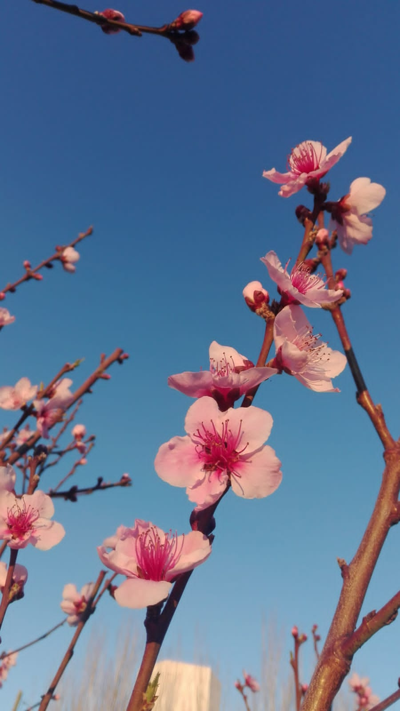

La flor de cerezo o sakura guarda más de un profundo significado en Japón, pues allí representa lo efímero de la vida y también es el símbolo de los guerreros samurái. Estas pálidas y frágiles flores son algo más que el sámbolo de la primavera. Son además la flor nacional y símbolo de Japón.
Durante el año los árboles de cerezo permanecen únicamente forrados de hojas y están desnudos en el invierno
En Japón, los árboles de cerezo son denominados sakura.Las recepciones solemnes, conocidas como Hanami, generalmente son excursiones en donde las personas se juntan para reflexionar sobre la naturaleza efímera de la vida y la mortalidad,
Durante el año los árboles de cerezo permanecen únicamente forrados de hojas, y están desnudos en el invierno, pero hacia el inicio de la primavera florecen, decorando los parques con su apariencia de nubes rosadas y blancas.
La cultura samurái de Japón también admiraba mucho a esta flor ya que se consideraba que los samuráis (al igual que las flores de los cerezos) tenían una vida corta y además porque se creía que la flor representaba las gotas de sangre derramadas en sus batallas.
Muchas de las variedades que han sido cultivadas para uso ornamental, no producen frutos. Las cerezas comestibles generalmente provienen de variedades de las especies relacionadas: Prunus avium, Prunus cerasus, etc.
